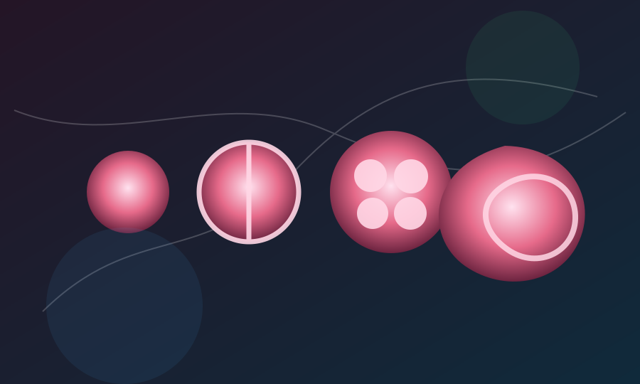

Përshkrimi kuranor hap-pas-hapi i formimit të fetusit përputhet me një saktësi absolute terminologjike me mikroskopinë moderne mjekësore.
Thelb: Deri në shekullin e 17-të shkencëtarët besonin se njeriu qëndronte i formuar plotësisht por i vogël (homunculus) brenda spermës. Embriologjia moderne zbuloi fazat fizike që kalon një fetus: pika e ujit, forma si shushunjë, copëza e mishit të përtypur, zhvillimi i kockave dhe më pas muskujve. Këto faza u deklaruan me fjalët e sakta në Kuran 1000 vjet më parë.

Evolucioni i Zbulimeve Embriologjike
Zhvillimi i njeriut brenda mitrës ka qenë gjithmonë një mister për popujt e lashtë. Teorive më të famshme deri në epokën e Rilindjes (duke përfshirë edhe Aristotelin) u mungonte totalisht saktësia e fazave embrionale. Vetëm në mesin e shekullit të 20-të, me ndihmën e mikroskopëve të avancuar dhe ekografisë, mjekësia mundi të përcaktojë saktë dhe vizualisht fazat morfologjike të zhvillimit të një embrioni, nga një qelizë në një qenie të plotë njerëzore.
Saktësia Mikroskopike e Kuranit
Kurani përshkruan procesin e zhvillimit në një seri termash të saktë vizualë dhe funksionalë në Suren El-Mu'minun, të cilat u konfirmuan pikë-për-pikë nga shkencëtarët modernë, përfshirë Babain e Embriologjisë moderne, Dr. Keith Moore.
- Nutfah (Pika e farës): Faza e parë ku sperma dhe veza bashkohen (zigota) duke krijuar një pikë uji të përzier.
- 'Alaqah (Shushunja/Gjaku i mpiksur): Më pas embrioni formon një strukturë që i ngjan fizikisht një shushunjeje (leech). Ashtu si shushunja thith gjak, embrioni në këtë fazë ngjitet në murin e mitrës dhe furnizohet me gjak nga nëna. Forma e tij mikroskopike është plotësisht si shushunjë.
- Mudghah (Copa e mishit të përtypur): Më vonë, embrioni transformohet në një masë të vogël që i ngjan një cope çamçakëzi ose mishi të përtypur me shenja dhëmbësh në të. Kjo është koha kur formohen somitet (strukturat e hershme të rruazave kurrizore), të cilat duken ekzaktësisht si shenja dhëmbësh.
- Izaman (Kockat) & Lahman (Mishi): Pas kësaj, tek masa e mishit fillojnë të formohen kockat fillestare. Menjëherë pas formimit të kërcit kockor, miotomët (qelizat e muskujve) mbështillen rreth kockave duke i veshur ato ("pastaj i veshëm kockat me mish/muskuj").
Lidhja e Fesë me Shkencën
Fakti që një njeri i pashkolluar, 1400 vjet më parë, do të përdorte terminologji kaq specifike si "shushunjë" ose "mish i përtypur"—të cilat përputhen me pamjen e saktë mikroskopike të embrionit të padukshëm me sy të lirë—e detyroi komunitetin shkencor ndërkombëtar të pranonte këto terma si saktësitë më të larta historike në këtë fushë. Dr. Keith Moore vetë pranoi se Kurani e ka kapërcyer shkencën e epokës së tij me mileniume.
Ajetet Kuranore
Kuran 23:13-14
ثُمَّ جَعَلْنَٰهُ نُطْفَةً فِى قَرَارٍ مَّكِينٍ • ثُمَّ خَلَقْنَا ٱلنُّطْفَةَ عَلَقَةً فَخَلَقْنَا ٱلْعَلَقَةَ مُضْغَةً فَخَلَقْنَا ٱلْمُضْغَةَ عِظَٰمًا فَكَسَوْنَا ٱلْعِظَٰمَ لَحْمًا ثُمَّ أَنشَأْنَٰهُ خَلْقًا ءَاخَرَ
Pastaj e vendosëm atë (njeriun) si një pikë farë (Nutfah) në një vend të sigurt (mitër). Pastaj pikën e farës e kthyem në një shushunjë ('Alaqah), më pas shushunjën e kthyem në një copë mishi të përtypur (Mudghah), më pas atë copë mishi e kthyem në kocka (Izaman), dhe kockat i veshëm me mish (muskuj - Lahman). Dhe më pas e zhvilluam atë në një krijesë tjetër.